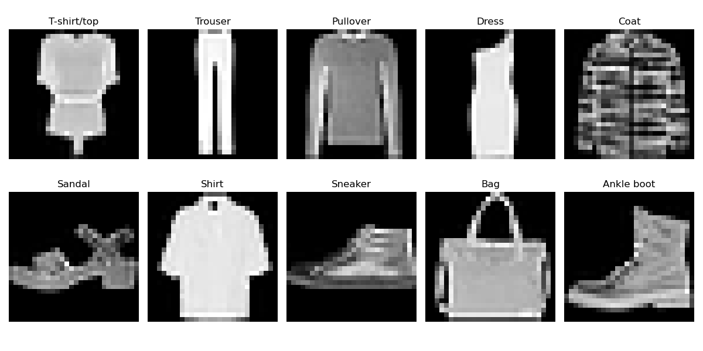

This project was developed as part of the MATHAI (Mathematics for AI) course during my studies at FIIT STU. The goal was to design and implement a multilayer neural network from scratch — without using any deep learning frameworks like PyTorch or TensorFlow — capable of classifying images from the Fashion MNIST dataset into 10 clothing categories, achieving at least 50% accuracy.
I worked through the full pipeline of building and training a neural network by hand, from data preprocessing to final evaluation.
class NeuralNetwork: def __init__(self, layers): self.layers = layers self.num_layers = len(layers) # initialization self.weights = [] self.biases = [] for i in range(self.num_layers - 1): self.weights.append(np.random.randn(layers[i+1], layers[i]) * np.sqrt(2. / layers[i])) self.biases.append(np.random.randn(layers[i+1], 1) * 0.01) def forward(self, X): self.activations = [X] self.z_values = [] for i in range(self.num_layers - 2): Z = np.dot(self.weights[i], self.activations[-1]) + self.biases[i] self.z_values.append(Z) A = relu(Z) self.activations.append(A) Z_final = np.dot(self.weights[-1], self.activations[-1]) + self.biases[-1] self.z_values.append(Z_final) A_final = softmax(Z_final) self.activations.append(A_final) return A_final def backward(self, X, y, learning_rate): batch_size = X.shape[1] dZ = self.activations[-1] - y for i in range(self.num_layers - 3, -1, -1): dA = np.dot(self.weights[i+1].T, dZ) dZ = dA * relu_derivative(self.z_values[i]) dW = np.dot(dZ, self.activations[i].T) / batch_size db = np.sum(dZ, axis=1, keepdims=True) / batch_size self.weights[i] -= learning_rate * dW self.biases[i] -= learning_rate * db
(Z = W * A + b). The output layer uses softmax to normalize values into class probabilities. Loss is computed using cross-entropy,
comparing predicted probabilities against one-hot encoded ground truth labels.
learning_rate = 0.01 with early stopping (patience = 20, min_delta = 0.001) to prevent overfitting.
This project gave me a deep understanding of how neural networks actually work under the hood — not just conceptually, but mathematically and in code. Implementing forward and backward propagation from scratch forced me to truly understand every step, from weight initialization and activation functions to gradient flow and loss computation.
The most valuable insight was seeing how much small design choices matter. Switching from sigmoid to ReLU, applying He initialization, and adding early stopping each improved accuracy by a few percent — small changes, but meaningful ones. It reinforced that building a solid model is as much about thoughtful iteration as it is about the math.